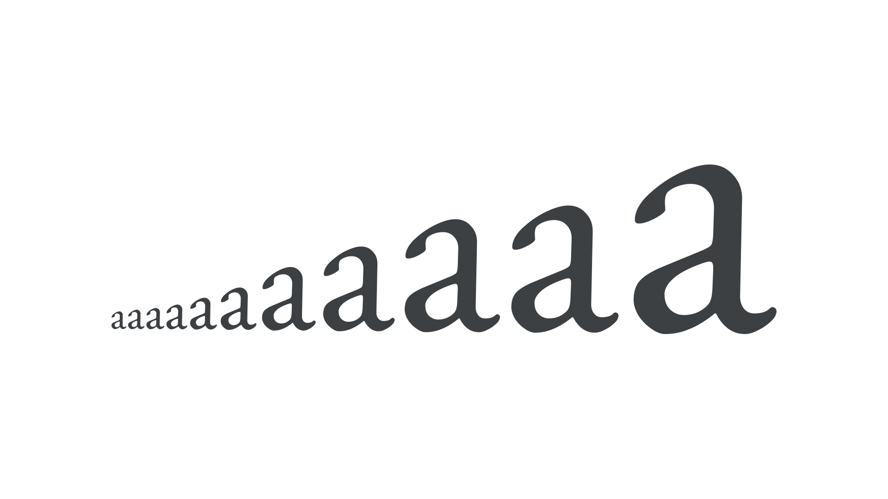

Point size
By Google Fonts Knowledge contributors · Google Fonts Knowledge.
Original article · Source on GitHub · CC BY-SA 4.0. Text, illustrations and existing credits reproduced from the licensed Knowledge repository. Open Shelf adapted the layout and links; these adaptations are also CC BY-SA 4.0. No endorsement implied.
“Point” is one of many units of measurement for type and the default unit used in contemporary print design. Like the pixel, the point is an absolute unit, as opposed to a relative unit such as an em, en, or rem.

The actual physical size of a point has varied throughout history, but since the mid-1980s, one point is equivalent to 1/72nd of an inch in print. Browsers have no concept of physical size and, although the size of an actual pixel varies, CSS defines a point as 1⅓ pixels.
But what is the point size of a font? Font rendering on screen or in print starts with scaling the font’s em to the desired point size. But there’s no specific part of a font that equals the point size, nor any combination of parts that necessarily add up to the point size. For Latin-based languages, the average capital height is about 70% of the point size. In an average font, the x-height is roughly half the point size. The font bounding box may approximately equal the point size, but there is no specific, required relationship. Thus, how large a given font is at a given point size varies, and is font-specific. If you set two different fonts at 16 point, very likely one will be larger than the other.